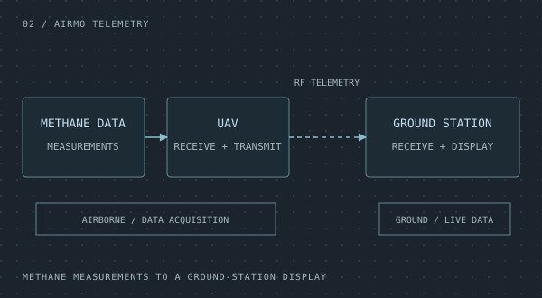
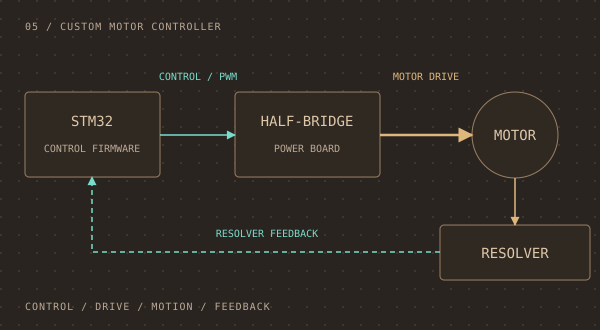
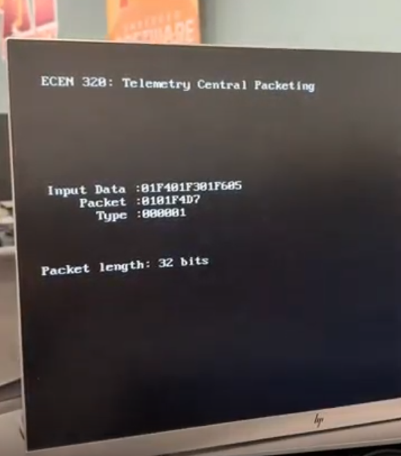
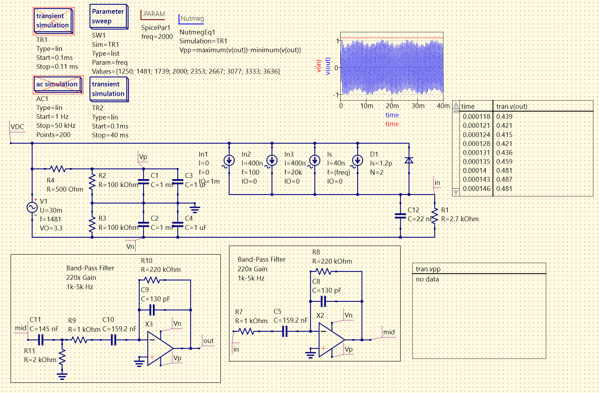

01 / TELEMETRY & DATA
BYU Racing live telemetry
CAN and GPS telemetry from a Formula SAE car, streamed over LTE to a FastAPI backend for live visualization and saved-data analysis.
Explore projectHARDWARE / FIRMWARE / SOFTWARE
I'm Blake, a computer engineering student building embedded systems, electronics, and the software that brings them to life.
01 / SELECTED WORK
A closer look at the
hardware and software behind them.
01 / TELEMETRY & DATA
CAN and GPS telemetry from a Formula SAE car, streamed over LTE to a FastAPI backend for live visualization and saved-data analysis.
Explore project
02 / DATA ACQUISITION
Methane measurements received by a UAV, sent over an RF telemetry link, and displayed at a ground station.
Explore project03 / FIRMWARE
Flight control software for drone balancing and remote control, running on an STM32F1 microcontroller.
Explore project
05 / ELECTRONICS
STM32 control through a custom half-bridge board to the motor, with resolver feedback closing the loop.
Explore project02 / CLASS PROJECTS
Coursework, circuit designs,
and hands-on class projects.

Class project
Verifying weather data before sending it to a remote server.
Explore coursework
ECEn 340
A laser tag receiver circuit I designed and physically built, plus op-amp gain-bandwidth analysis for ECEn 340.
Explore coursework03 / BEHIND THE WORK
I'm Blake Hill, a computer engineering student interested in embedded systems, electronics, and PCB design.
My projects span vehicle telemetry, flight control firmware, data integrity, and motor control. This portfolio brings together the hardware and software sides of that work.